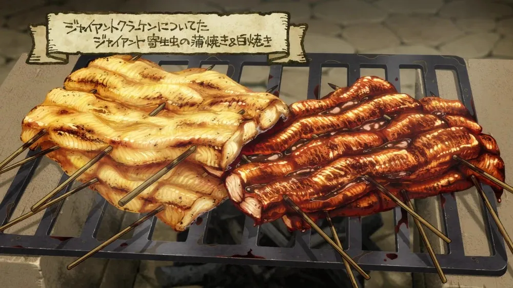

Giant Parasite from Giant Kraken: Grilled Plain and Kabayaki-Style

Description
The Giant Parasite from the Kraken is a large, squid-like creature with tender, slightly chewy meat. This dish offers two ways of cooking it: one simple grilled, and the other Kabayaki-style, which involves basting the meat with a sweet soy-based sauce.
Ingredients
- Giant Parasite (from a Giant Kraken)
- Dungeon Herbs
- Dungeon Salt
- Slime Oil
- Fermented Dungeon Soybeans
- Dungeon Honey
Steps for Grilled Plain
- Hunt a Giant Kraken and carefully extract the Giant Parasite from its body.
- Clean and slice the parasite into thick pieces, similar to squid rings.
- Rub the pieces with dungeon salt and a bit of slime oil for flavor.
- Grill the parasite over an open flame, turning frequently until charred and tender. This method brings out the natural, subtle flavors of the parasite.
- Serve plain with a sprinkle of herb salts harvested from the dungeon.
Steps for Kabayaki-Style
- Prepare the Giant Parasite by slicing it into long, eel-like strips.
- Create a Kabayaki sauce using dungeon honey, fermented dungeon soybeans (for soy sauce), and dungeon wine.
- Brush the strips with the Kabayaki sauce and grill them over the fire, basting them with more sauce as they cook.
- Grill until the parasite has a glossy, caramelized finish. The sweetness of the sauce pairs perfectly with the savory parasite meat.
- Serve with dungeon greens and a side of steamed dungeon rice for a delicious and well-balanced meal.
Back to homepage